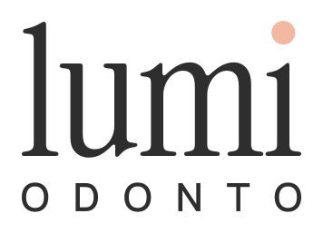
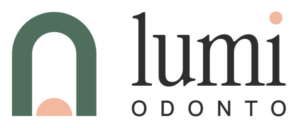
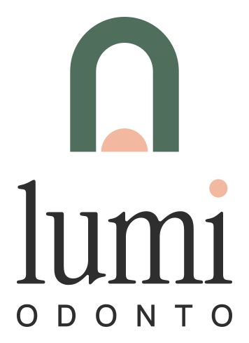
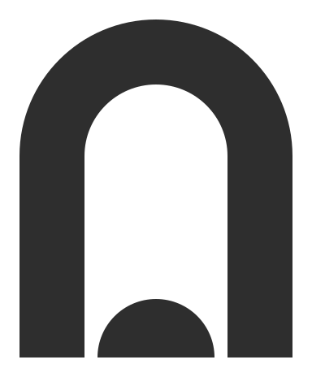
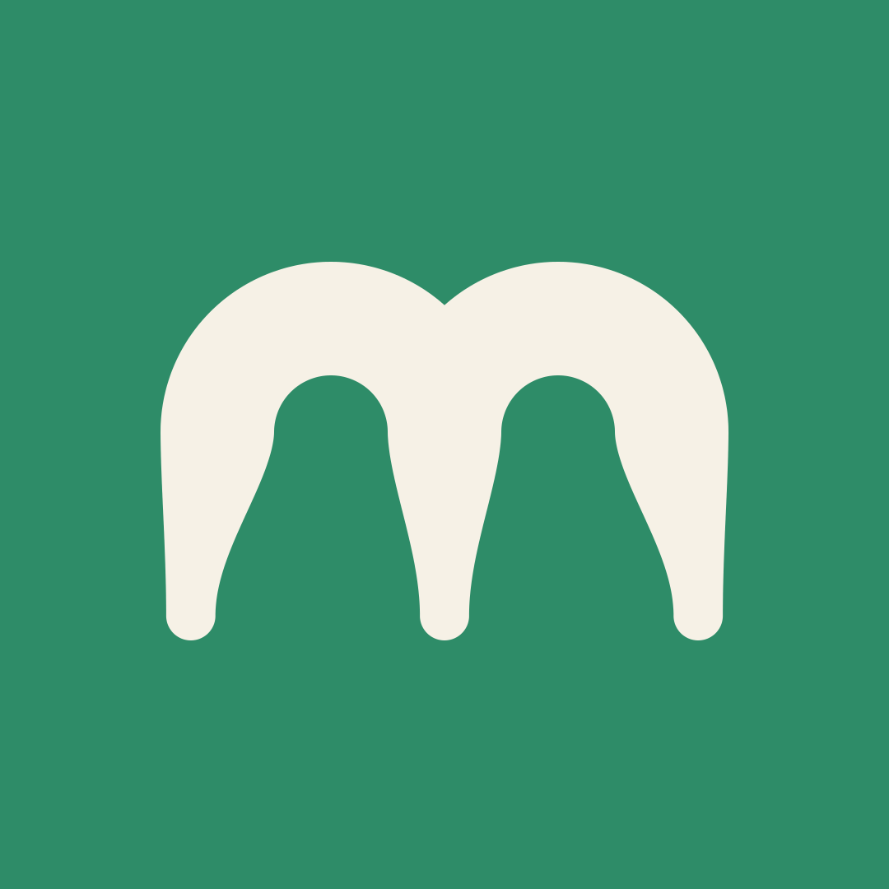

O arco repete o desenho dos dentes: a arcada que todo dentista conhece.
Uma porta aberta: a clínica recebe, não assusta.
O sol nascendo é o “lumi”, de lúmen: luz. O mesmo pêssego vira o pingo do i.


Principal · horizontal
Vertical
Negativo
Mono
PerfilNada de azul nem branco puro. A base é areia e sálvia; o pêssego entra pouco, como a luz que bate na janela.
Na primeira consulta a gente conversa antes de qualquer coisa. Você entende o que vai ser feito e decide junto.
Toda foto entra recortada em arco.
Meio círculo pêssego saindo da borda, com arcos finos em volta.
Pílulas cheias de cantos redondos. Nada de selo estourado.
O pingo pêssego do i vira marcador de lista e destaque.
Clara, calma e sem jargão. Explica antes de vender.
Evitar: “sorriso perfeito”, “procedimentos de excelência”, “agende já!!!”.